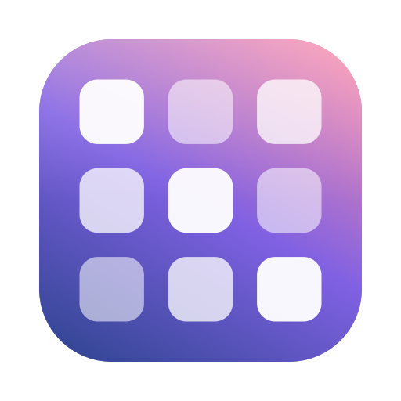

Your layout, restored
macOS kept Launchpad's database after the upgrade. Relaunch reads it once and puts your pages and folders back exactly as they were. It never changes the original file.

RelaunchRelaunch brings back the full-screen grid you swipe left and right, with folders, drag to rearrange and instant search. On first launch it restores the layout you already had.
Free and open source · macOS 14 Sonoma or later · Apple silicon
Try it: swipe or drag sideways, click the dots, open the folder, or type to search. The apps here are made up.
macOS kept Launchpad's database after the upgrade. Relaunch reads it once and puts your pages and folders back exactly as they were. It never changes the original file.
Pages follow your fingers, rubber-band at the ends and snap on a flick. A mouse wheel, ⌘← ⌘→ and the page dots work too.
Drop one app on another to make a folder, named after the apps' category. Rename it in place, drag apps out, or ungroup it in one click.
Matches the start of any word, initials like “vsc”, and ignores accents. Arrow keys and Return launch without touching the mouse.
Relaunch stays running in the background, as Launchpad did inside the Dock. It finds 115 apps in about 50 ms and uses no CPU while idle.
Open it from the Dock, with ⌥Space, or from a hot corner. No Accessibility access, no private APIs, no tracking.
Relaunch.zip from the
latest release and move
Relaunch.app to Applications.xcode-select --install
git clone https://github.com/STACK-42/relaunch.git
cd relaunch
scripts/build.sh --installNo. macOS's Dock captures both before any app sees them. Taking them over would need private APIs, so Relaunch uses the Dock icon, a keyboard shortcut and an optional hot corner instead.
With defaults, then restart Relaunch:
defaults write com.ahmedalghali.Relaunch hotkey "ctrl+opt+l"
defaults write com.ahmedalghali.Relaunch columns -int 8
defaults write com.ahmedalghali.Relaunch hotCorner bottomLeftYes. Without an old layout it starts with Apple's apps first, utilities in an “Other” folder, and everything else alphabetically.
Quit it from the right-click menu on the background, then delete the app and
~/Library/Application Support/Relaunch.
The project's research notes explain how Apple's original worked, based only on inspecting the system. Relaunch's code is original and uses public APIs. Read the notes.